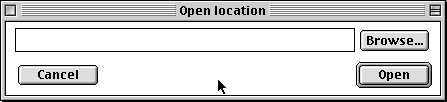
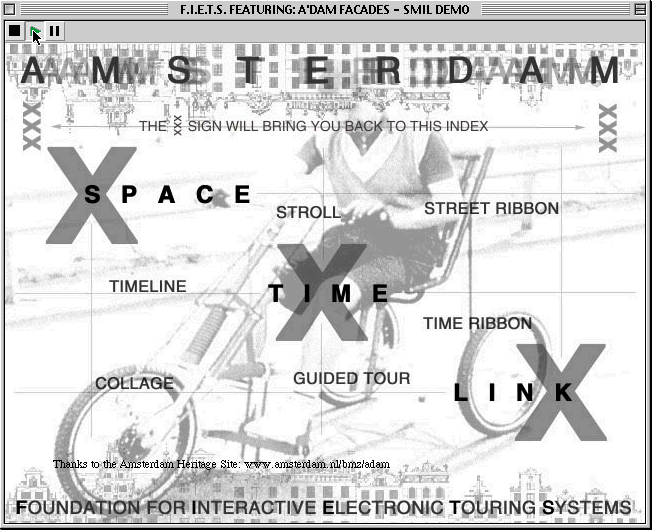
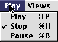
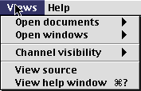

The user can browse to the file they want to view, or type in a URL for a local or remote file directly.

A player window will open to the correct size to play the document.

The buttons allow the user to play, pause or stop the document.
Open opens an existing document. The already opened session of the player will not be closed, this allows more than one document can be played at the same time.
Close Window closes the current window. Note that this does not necessarily close the document, which may continue playing without windows (audio will continue, for instance).
Close Document stops playing the document and closes it.
Preferences - select the internet preferences for the system. Here you can set your internet connection speed, preferred language and such. This may cause alternative content to be played in some documents.
Debug is primarily for developers, but occasionally the information presented when you select the Show Debug Window may be helpful to track down problems in your documents.
Quit quits the editor.
The Edit menu contains the standard edit commands. They are functional in dialog windows only

The commands here duplicate the Play, Pause and Stop buttons in the document window. There is an extra keyboard shortcut, spacebar, which does Play when stopped and toggles between Play and Pause otherwise.

Open Documents allows you to select any of the open documents, which is then popped to the front. Menu commands now act on this document.
Open Windows is similar, but lists all windows (also source and dialog windows).
Channel Visibility allows you to selectively disable and enable channels, also known as SMIL regions.
View Source will open a window with the SMIL source for the current document.
View Help Window will open this help browser.